← AOA 다운로드 페이지 · PDF 내려받기 · 38쪽
AOA 0.1.8 · 2026년 9월 30일
AOA 처음 사용자를 위한 매뉴얼
처음에는 비서와 작은 업무 한 건을 해 보세요. 가벼운 대화로 업무 맥락을 알려주고, 필요한 자료를 연결하고, 결과를 확인하는 순서로 안내합니다. 이후 여러 직원의 의견이 필요하면 자동회의를, 잘 된 일을 반복하려면 절차와 루틴을 활용하세요. 각 장은 사용자가 하려는 행동을 중심으로 구성했습니다.
AOA 0.1.8 기준입니다. 화면은 별도 예시 사무실의 브라우저 화면이며, 예시 대화와 업무 기록은 설명용으로 구성했습니다. 실제 AI의 실행 결과나 품질을 보증하는 사례가 아닙니다. 설치 앱에서는 파일 선택창과 일부 연결 화면의 모양이 다를 수 있습니다.
1. 시작하고 비서와 일하기 / 01
AOA로 어떤 일을 할 수 있나요
AOA는 내 컴퓨터 안에 AI 직원과 일할 사무실을 만드는 도구입니다. AOA는 Atomy Office Agent의 줄임말입니다.
- 내가 목표 정하기
- 직원에게 맡기기
- 기록과 결과 확인
- 다음 업무에 활용
내 역할은 대표입니다
내가 원하는 결과와 기준을 정하고 직원에게 업무를 맡깁니다. 직원은 연결된 AI를 이용해 조사·정리·문서 작성 등을 수행합니다. 부서나 직원을 많이 만들어야 시작할 수 있는 것은 아닙니다.
직원은 역할이 있는 AI입니다
자료를 정리하는 직원, 보고서를 쓰는 직원처럼 맡을 일을 설명해 구성합니다. 인사카드에는 역할과 일하는 방식이 담깁니다. 기본 비서는 필요한 일을 정리하고 직원 구성과 보고를 돕습니다.
대화가 업무와 문서로 이어집니다
대화에서 업무를 지시하고, 업무기록에서 진행과 결과를 확인합니다. 저장한 지식과 산출물은 문서함에서 다시 찾을 수 있습니다. 중요한 결과는 근거를 확인한 뒤 사용하세요.
로컬 저장과 AI 연결
사무실 자료와 설정은 이 기기에 저장됩니다. 연결한 AI와 외부 서비스에는 요청을 처리하는 데 필요한 입력이 전달될 수 있습니다. 로컬 앱이라는 말이 모든 AI가 인터넷 없이 동작한다는 뜻은 아닙니다.
목차로1. 시작하고 비서와 일하기 / 02
처음 사용할 준비를 차례로 마치기
처음부터 모든 기능을 연결할 필요는 없습니다. 작은 업무 한 건이 돌아가는지부터 확인합니다.
- 앱 설치
- AI 연결
- 사무실과 직원 구성
- 첫 업무 지시
1. 앱과 사무실 준비
공식 배포판을 설치하고 사무실을 만듭니다. 처음에는 기본 비서로 시작해도 됩니다. 설정 화면에서 언어와 사용할 AI 연결을 확인합니다.
2. 비서에게 짧은 업무 한 건
비서에게 “다음 메모를 핵심 세 줄로 정리해 줘”라고 요청하고 짧은 예시 메모를 붙입니다. 응답이 나오고 업무기록에서 해당 실행을 찾을 수 있는지 확인합니다. 연결 오류가 있으면 먼저 AI 연결을 해결합니다.
3. 조직 자료가 필요한 경우에 연결
조직 지식을 쓸 때는 Google 업무 계정의 사무실 사용 승인과 조직지식 다운로드 연결을 순서대로 진행합니다. Google 로그인만으로 AI 실행 연결이 대신되지는 않습니다.
4. 반복 실행은 시험 뒤에
자동회의에 참여할 직원은 필요한 자료를 읽을 수 있는지 먼저 시험합니다. 루틴은 같은 업무를 한 번 직접 실행한 뒤 일정·시간대를 정합니다. 실행 시간에는 컴퓨터와 앱을 켜 둡니다.
목차로1. 시작하고 비서와 일하기 / 03
앱을 설치하고 준비하기
컴퓨터에 맞는 설치 파일과 사용할 AI 계정을 준비합니다. 처음부터 모든 외부 서비스를 연결할 필요는 없습니다.
- 앱 설치
- AI 연결
- 사무실과 직원 구성
- 첫 업무 지시
1 설치 파일 받기
공식 다운로드 페이지에서 Apple Silicon Mac용 DMG 또는 Windows용 설치 파일을 받습니다. Mac은 DMG를 열어 AOA를 응용 프로그램으로 옮기고, Windows는 설치 파일의 안내를 따릅니다. Intel Mac과 Linux용 공개 설치 파일은 이 안내의 대상이 아닙니다.
2 첫 실행 안내 따라가기
처음 여는 사무실이 없다면 업무 계정 연결 → 개발 환경 → 러너 연결 → 사무실 개설 순서의 안내를 봅니다. 개발 환경은 일부 AI 연결이 실행될 수 있도록 준비하는 단계입니다. 설치 중에는 끝날 때까지 기다리세요.
3 연결할 계정 정하기
업무 계정은 Google·Slack 자료를 사용할 때, AI 연결은 직원이 생각하고 일을 수행할 때 필요합니다. 둘은 서로 다른 연결입니다. 계정·러너 연결을 나중으로 넘길 수 있지만 실제 AI 업무에는 사용 가능한 러너가 필요합니다.
4 작은 연습 사무실로 시작하기
처음에는 ‘업무 연습실’처럼 구분하기 쉬운 이름을 사용하세요. 실제 고객 자료 대신 직접 쓴 짧은 예문으로 연결과 응답부터 확인하면 사용 흐름을 익히기 쉽습니다.
목차로1. 시작하고 비서와 일하기 / 04
직원이 사용할 AI 연결하기
러너는 AOA가 AI를 실행하는 연결 방식입니다. 처음에는 사용할 서비스 하나만 연결하세요.
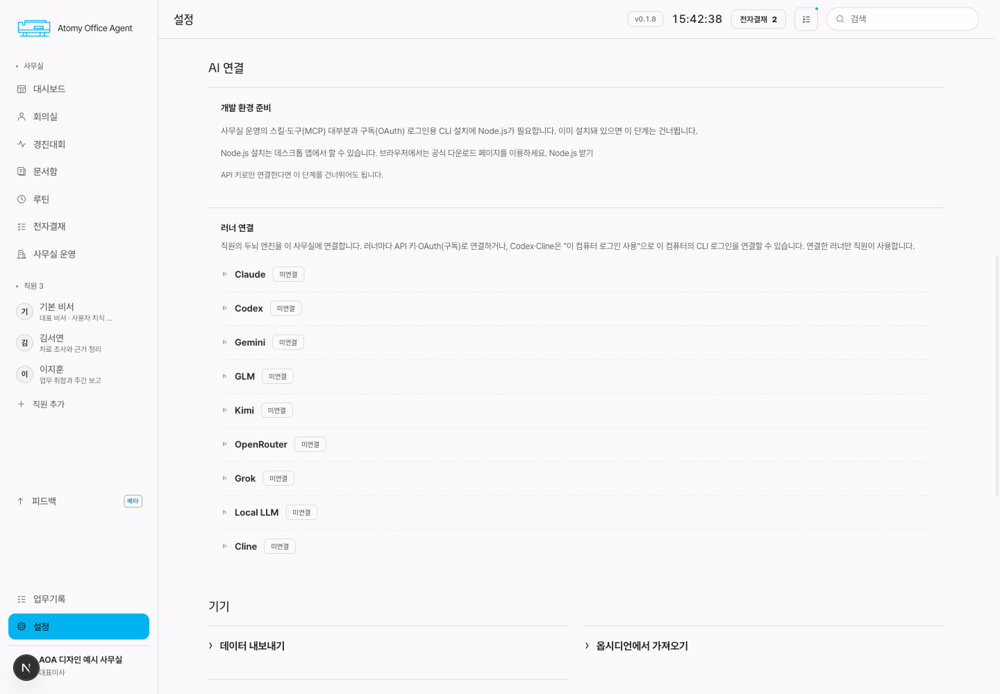
1 연결 화면 열기
첫 실행의 러너 연결 단계 또는 설정 → AI 연결로 이동합니다. 사용할 서비스의 카드를 펼쳐 설치·로그인 상태를 확인합니다.
2 화면이 안내하는 방법 선택
브라우저 로그인은 해당 서비스의 로그인 화면에서 동의하는 방식입니다. API 방식은 발급받은 키를 연결 설정에 입력하는 방식입니다. 서비스마다 지원 방식이 다르며, Gemini는 API 방식으로 안내됩니다.
3 설치가 필요하면 안내대로 준비
설치 안내가 나오면 현재 운영체제를 선택해 명령과 공식 안내를 확인합니다. 명령 복사는 설치 완료가 아닙니다. 안내된 설치를 마친 뒤 다시 확인하고 연결 상태가 바뀌었는지 보세요.
4 연결 후 첫 응답 확인
직원에게 짧은 정리 작업을 지시합니다. 연결 오류가 나면 같은 요청을 반복 전송하기보다 설정에서 인증 상태와 이용 한도를 확인하세요.
목차로1. 시작하고 비서와 일하기 / 05
새 사무실과 직원 구성하기
사무실 하나에 함께 일할 직원과 문서를 모읍니다. 회사 법인이나 조직도를 준비해야 하는 것은 아닙니다.
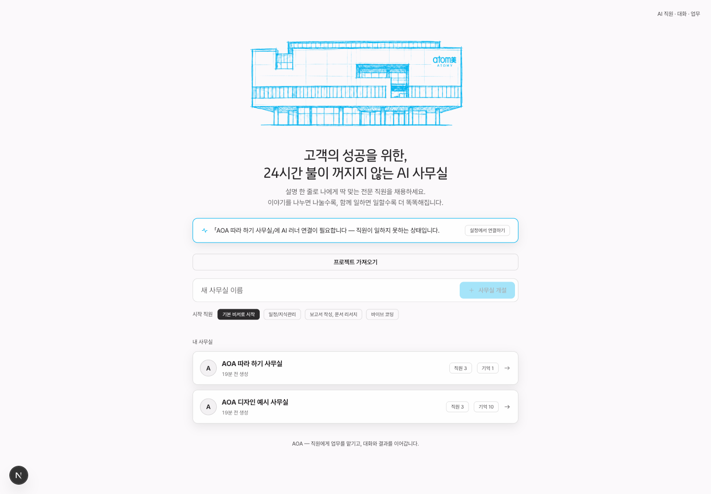
1 사무실 이름 입력
오피스 선택 화면에서 새 사무실 이름을 입력해 개설합니다. 일반 생성 경로에서는 처음 직원 구성을 돕는 대화가 이어집니다. 미리 준비된 구성을 선택한 경우에는 직원 대화로 바로 이동할 수 있습니다.
2 업무와 목표 설명
예를 들어 ‘매주 여러 자료를 모아 팀 공유용 보고서를 쓰고 싶어요’라고 적습니다. 필요한 역할과 업무 범위를 제안받으면 빠진 일이나 과한 역할을 답변으로 조정하세요. 직원 구성 제안받기를 누른 뒤, 수정할 내용은 답변 반영해 제안 수정으로 반영합니다.
3 제안 확인 후 확정
제안된 직원의 이름과 맡을 일을 확인합니다. 수정 입력을 먼저 반영한 뒤 이 구성으로 직원 만들기를 누릅니다. 처음부터 직원 수를 늘리기보다 필요한 역할만 남기는 것이 좋습니다.
나중에 직원을 추가하려면
대시보드의 ‘어떤 전문가가 필요하세요?’ 입력란에 맡길 일을 적고 직원 추가를 누릅니다. 사무실 생성 때의 구성 대화를 매번 다시 진행하지는 않습니다.
목차로1. 시작하고 비서와 일하기 / 06
무엇부터 할지 비서와 정하기
기본 비서는 사무실에 공통으로 있는 업무 상담·채용 지원·보고 담당입니다. 표시 이름이 달라도 역할은 같습니다.
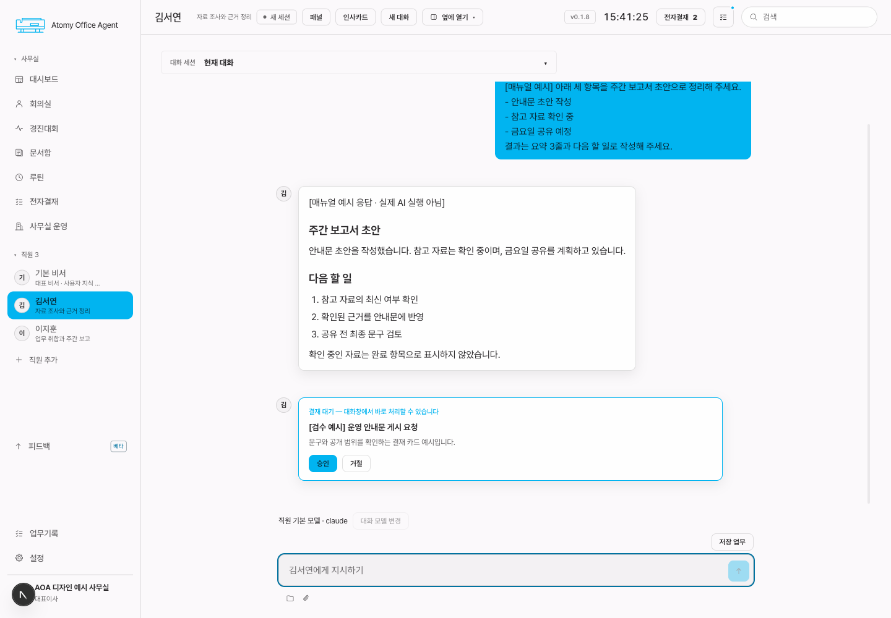
언제 비서에게 말하나요
해야 할 일이 막연하거나 누가 맡으면 좋을지 모를 때 비서 대화를 엽니다. “매주 자료를 모아 보고하는 일이 오래 걸려. 도와줄 방법부터 정리해 줘”처럼 현재 상황을 말해 보세요.
어떻게 직원 구성으로 이어지나요
비서는 누구의 어떤 반복 업무가 어려운지, 원하는 결과물이 무엇인지 짧게 확인하고 역할과 예시 업무를 제안합니다. 제안을 확인한 뒤 채용을 요청합니다. 부서나 모델 이름부터 정할 필요는 없습니다.
어떤 보고를 부탁하나요
“이번 주 직원별 결과와 근거, 아직 내가 결정할 일, 다음 행동 세 가지를 정리해 줘.” 비서는 직원들의 기록과 산출물을 취합해 보고하는 역할입니다. 보고의 출처와 실제 결과 파일도 함께 확인합니다.
목차로1. 시작하고 비서와 일하기 / 07
가볍게 대화하며 내 업무 맥락 알려주기
느슨한 잡담은 일상적인 업무 대화입니다. 정식 보고서를 쓰듯 답하지 않아도 됩니다.
- 업무 이야기
- 짧게 답하기
- 기록 확인
- 구체적으로 맡기기
짧은 답이면 충분합니다
비서가 요즘 하는 일이나 반복되는 불편을 물으면 “월요일마다 숫자를 모으는 데 시간이 걸려요”, “보고는 결론부터 세 줄이면 좋아요”처럼 답합니다. 실제로 공유한 업무 맥락을 바탕으로 대화가 이어집니다.
답하지 않거나 잠시 멈추기
질문 하나씩 답을 기다리는 방식입니다. 바쁘면 “이 질문은 건너뛰어 줘”라고 말하세요. “잡담 그만”, “잡담 다시 시작”으로 자동 질문을 중단하거나 재개할 수 있습니다.
언제 먼저 말을 거나요
앱이 실행 중이고 AI 연결을 사용할 수 있을 때 평일 업무 시간대에 질문 기회가 있습니다. 답하지 않은 질문을 재촉하며 쌓는 방식은 아닙니다. 모든 접속 시점에 즉시 질문이 오는 것은 아닙니다.
업무로 바꾸려면 구체적으로 요청
“자료 취합이 번거로워요”는 불편을 알려주는 말입니다. 실제로 맡기려면 “첨부한 이번 주 자료를 취합해 표로 만들어 줘”라고 요청하세요. 정기 실행은 시험 결과를 확인한 뒤 별도로 정합니다.
목차로1. 시작하고 비서와 일하기 / 08
알려준 내용이 어떻게 반영되는지 확인하기
대화에서 남긴 맥락은 앞으로의 업무를 돕는 참고 자료입니다. 적용 범위와 정확성을 직접 확인할 수 있습니다.
- 선호 알려주기
- 근거 검토
- 필요한 직원과 공유
- 결과에서 확인
예시: 보고 방식 알려주기
“주간 보고는 결론 세 줄 다음에 근거 링크를 달아 주세요”라고 말합니다. 나중에 업무를 맡길 때 “내 보고 선호를 참고해 이번 주 요약을 작성해 줘”라고 요청하면 적용 의도를 더 분명히 전달할 수 있습니다.
인터뷰를 켜고 검토·공유하기
문서함 → 인터뷰 → 인터뷰 기록 켜기를 선택합니다. 비서의 질문에 답한 내용에서 업무 선호·필요가 추출되면 검토할 초안·나만 보기로 남습니다. 검토·정정에서 근거·해석·적용 범위·공유 범위를 확인하고 확인하고 저장을 누릅니다. 켜기 전에 한 말은 자동으로 옮겨지지 않습니다. 초안이 없다면 기록 추가로 직접 정리할 수 있습니다.
담당 직원에게 적용 요청하기
현재 기록이며 기한이 지나지 않았고 공유 범위에 포함된 직원은 지원되는 도구로 기록을 찾아 참고할 수 있습니다. “공유한 보고 선호를 참고해 이 자료를 정리해 줘”라고 요청한 뒤 결과에 반영됐는지 확인합니다.
정정하거나 사용을 멈추기
검토·정정에서 고치거나 비서에게 어떤 답변인지 특정해 정정·기억하지 않기를 요청합니다. 말로 처리한 인터뷰 정정은 다시 검토할 초안이 될 수 있으니 상태를 확인합니다. 답변 사용을 중지해도 기존 대화 이력은 남습니다.
목차로1. 시작하고 비서와 일하기 / 09
첫 업무를 한 번 맡겨 보기
웹 검색이나 Google·Slack 연결 없이, 직접 적은 세 가지 사실을 정리하는 일부터 시작합니다.
1 직원 선택
왼쪽에서 기본 비서 또는 보고서를 맡길 직원 이름을 누릅니다. 아래 입력란에 다음 예문을 붙여 넣습니다.
2 이렇게 지시해 보세요
‘다음 내용을 팀 공유용 주간 보고서 초안으로 정리해 줘. 안내문 초안 작성, 참고 자료 확인 중, 금요일 공유 예정. 결과는 요약 3줄과 다음 할 일 3개로 써 줘. 확인 중인 내용은 완료로 표현하지 마.’
3 응답과 결과 확인
보내기를 누르고 답변을 기다립니다. 요청한 형식인지, 사실이 바뀌지 않았는지 확인하세요. 부족하면 ‘확인 중인 항목을 별도로 표시해 줘’처럼 수정할 부분을 구체적으로 말합니다.
4 저장 위치 확인
다시 쓸 결과라면 문서로 저장해 달라고 지시하고 파일 링크나 문서함에서 실제 저장본을 엽니다. 업무기록에서도 해당 업무와 결과를 확인합니다.
목차로2. 자료와 조직 지식 준비하기 / 10
Google과 Slack 자료 연결하기
업무 계정 연결은 외부 자료에 접근하기 위한 과정입니다. AI 서비스 로그인과 별도로 관리합니다.
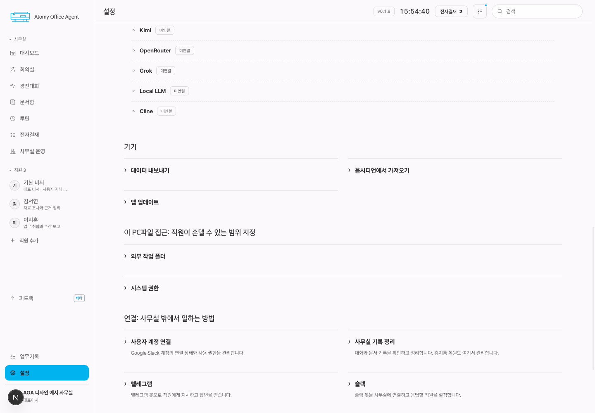
연결 순서
설정 → 사용자 계정 연결을 열고 사용할 계정으로 로그인합니다. 사무실 사용 상태와 권한을 확인한 뒤, 사무실 운영 → 스킬·도구에서 관련 도구와 직원 설정을 점검합니다.
Google Workspace
연결한 계정과 권한 범위 안에서 업무 자료를 활용합니다. 외부 변경을 요청했다면 대상과 전체 변경 내용을 확인하고 승인합니다. 권한을 넓힌 경우 다시 로그인해야 할 수 있습니다.
Slack 사용자 계정
0.1.8의 기본 사용자 연결은 공개 채널과 기존 1:1 DM 조회를 제공합니다. 비공개 채널·그룹 DM, DM 첨부·스레드 답글은 대상에서 제외됩니다. 메시지 전송이나 새 대화 생성용 연결은 아닙니다.
봇 연결과 구분
설정의 텔레그램·슬랙 봇 연결은 사무실 밖에서 직원에게 지시하고 응답을 받기 위한 별도 기능입니다. 사용자 계정 조회와 봇 설정을 같은 것으로 생각하지 마세요.
목차로2. 자료와 조직 지식 준비하기 / 11
조직 계정으로 지식 다운로드 연결하기
조직 Google 로그인 → 사무실 사용 승인 → 이 컴퓨터의 다운로드 연결 순서로 진행합니다.
- 조직 Google 로그인
- 사무실 사용 승인
- 다운로드 연결
- 문서 원문 확인
1. Google 계정으로 로그인
AOA가 실행되는 컴퓨터에서 설정 → 사용자 계정 연결을 펼칩니다. Google의 로그인하고 사무실에 연결을 누르고 조직 계정으로 로그인한 뒤 허용 내용을 확인하고 AOA로 돌아옵니다.
2. 사무실 사용 승인 확인
계정 인증됨 · 사무실 사용 승인됨을 확인합니다. 사무실 사용 승인 전이라면 이 사무실에서 사용 승인을 누릅니다. 신규 로그인 흐름에서 이미 승인됐다면 추가로 누를 필요가 없습니다.
3. 다운로드 연결
사무실 운영 → 조직 지식 → 조직 계정 연결에서 로그인한 계정으로 연결을 누릅니다. 연결 후 업데이트 확인도 자동으로 시작됩니다.
4. 자료가 설치됐는지 확인
이 설치의 조직지식 다운로드가 연결되어 있습니다라는 문구와 업데이트 결과를 모두 확인합니다. 아래에 문서 목록이 나타나고 원문까지 열리는지 확인하세요.
목차로2. 자료와 조직 지식 준비하기 / 12
조직 자료를 찾아 업무에 활용하기
조직이 제공한 자료를 읽고 출처를 확인하는 공간입니다. 개인 사무실의 결과물을 모은 문서함과 구분합니다.
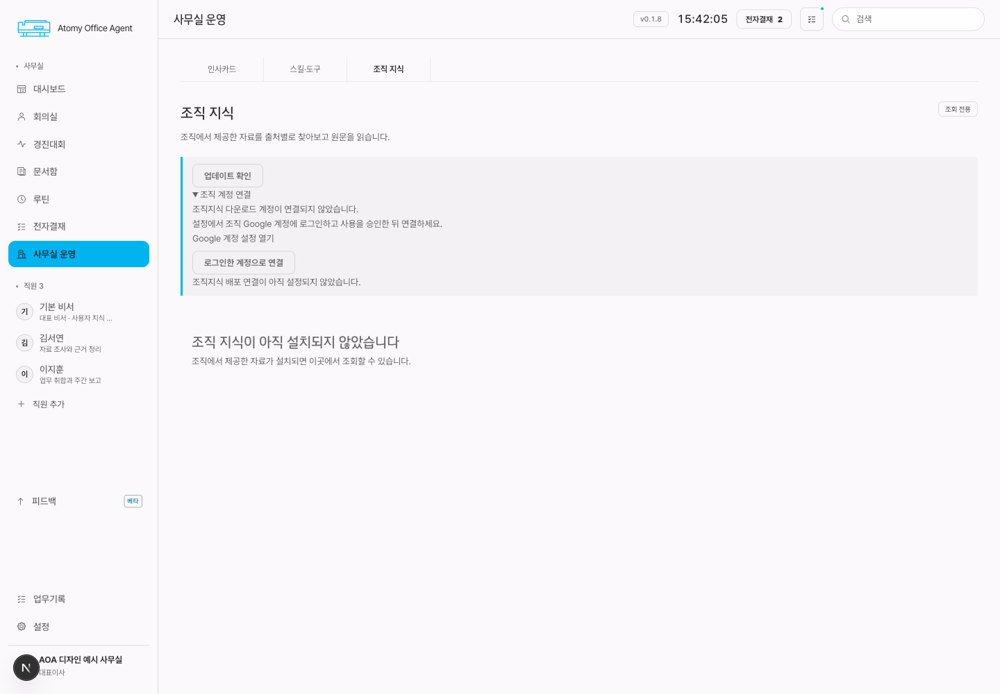
자료 찾아보기
사무실 운영 → 조직 지식으로 이동해 분류나 검색어로 문서를 찾습니다. 원문과 출처를 읽고 현재 업무에 적용할 자료인지 확인합니다.
직원에게 참조 요청
자료 제목과 필요한 부분을 구체적으로 알려 줍니다. 예: ‘조직 지식의 해당 안내를 참고해 고객 설명문 초안을 작성하고 근거 문서도 연결해 줘.’
자료가 보이지 않을 때
조직 자료가 설치·연결돼 있는지와 업무 계정의 사용 승인을 확인합니다. 공개 앱을 설치했다고 모든 조직 내부 자료가 자동으로 들어오는 것은 아닙니다.
내 자료와 구분
조직 지식 화면은 배포된 자료를 조회하는 용도입니다. 내 업무에서 만든 보고서와 첨부는 문서함에서 찾습니다. 조직 지식을 연결하지 않아도 일반 직원 구성과 업무를 시작할 수 있습니다.
새 자료 확인하기
업데이트 확인을 누르고 새 조직지식을 적용했습니다 또는 현재 제공되는 최신 지식을 사용하고 있습니다를 확인합니다. 확인 시각과 원자료의 적용일은 다릅니다. 문서의 판본과 적용 범위도 확인하세요.
목차로2. 자료와 조직 지식 준비하기 / 13
조직 지식 연결이 막히면 해결하기
연결 성공과 자료 설치 성공을 나누어 확인하면 문제 지점을 찾기 쉽습니다.
| 보이는 상태 | 다음 행동 |
|---|---|
| 사무실 사용 승인 전 | 설정의 사용자 계정 연결에서 이 사무실에서 사용 승인을 누릅니다. |
| 조직 Google 계정 연결이 필요합니다 | 조직 계정 로그인과 사무실 사용 승인 상태를 확인한 뒤 조직 지식에서 다시 연결합니다. |
| 연결하지 못했습니다 | 올바른 조직 계정인지 확인합니다. 계속 실패하면 담당자에게 허용 조직과 배포 설정 확인을 요청합니다. |
| 조직지식 배포 연결이 아직 설정되지 않았습니다 | 공식 앱 버전을 확인하고 조직 담당자에게 문의합니다. 사용자가 배포 주소나 키를 임의로 입력할 단계가 아닙니다. |
| 업데이트를 확인하지 못했습니다 | 인터넷 연결을 확인하고 업데이트 확인을 다시 누릅니다. 실패해도 기존 지식은 유지됩니다. |
| 문서 목록이 비어 있거나 원문을 못 엽니다 | 업데이트 결과를 확인하고 다시 시도 또는 목록 새로고침을 합니다. 반복되면 자료명·판본을 전달합니다. |
| 로그인 앱 설정이 준비되지 않았습니다 | 계정 등록과 배포 설정은 담당자 작업입니다. 앱 버전과 화면 안내를 담당자에게 전달합니다. |
2. 자료와 조직 지식 준비하기 / 14
기존 프로젝트 폴더에서 시작하기
이미 문서와 산출물이 담긴 폴더가 있다면, 그 자료를 바탕으로 직원과 업무 구성을 제안받을 수 있습니다.
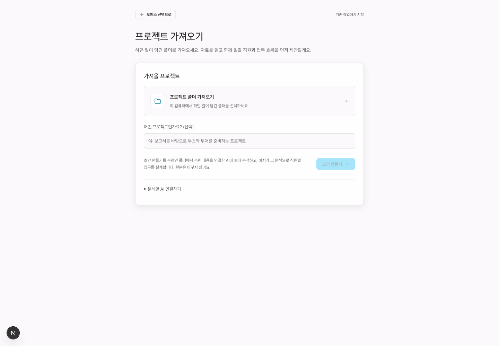
1 폴더 선택과 범위 확인
왼쪽 위 AOA 로고 → 오피스 선택 화면 → 프로젝트 가져오기로 이동합니다. 프로젝트 폴더 가져오기로 폴더를 선택하고 설명을 덧붙입니다. 읽은 자료 목록과 제외·발췌된 파일을 확인하세요.
2 초안 만들기
AI를 연결하고 초안 만들기를 누릅니다. 선택된 자료의 발췌문이 연결한 AI에 전달됩니다. 프로젝트 이해, 직원 역할, 필요한 입력과 수행·저장·인계 절차를 살펴보세요.
3 수정하고 오피스 만들기
틀린 점을 적어 답변 반영하기를 누르거나 세부 구성을 조정합니다. 확인한 뒤 이대로 오피스 만들기를 누릅니다. 기존 오피스에 가져오는 경로도 제공합니다.
4 첫 업무는 별도로 지시
가져오기는 직원과 자료 참조 관계를 구성하는 과정입니다. 실제 업무는 다음 지시부터 시작합니다. 원본 폴더는 외부 작업 폴더로 연결되며 가져오기 단계에서 원본을 수정하지 않습니다.
목차로2. 자료와 조직 지식 준비하기 / 15
파일 접근과 데이터 보관하기
AOA의 사무실은 로컬 자료를 사용합니다. 자주 쓰는 결과와 중요한 사무실 데이터는 별도로 보관하세요.
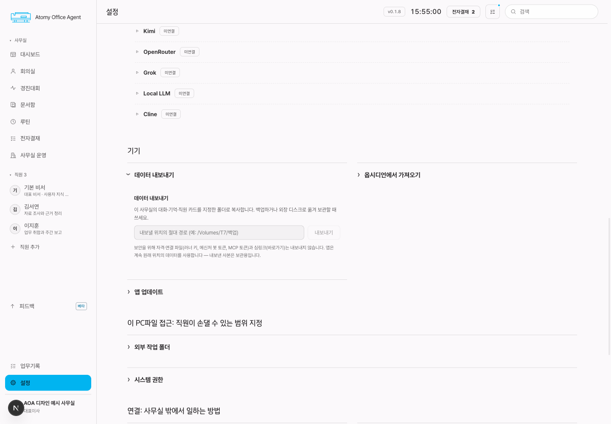
외부 작업 폴더
설정 → 외부 작업 폴더에 업무에 필요한 디렉터리를 연결합니다. 프로젝트 가져오기에서 연결한 폴더도 확인할 수 있습니다. 원본 폴더를 옮겼다면 현재 경로와 접근 상태를 다시 확인하세요.
내보내기와 백업
데이터 내보내기에서 대상 폴더를 골라 대화·기억·직원 카드 등 파일을 복사합니다. 자격·연결 파일과 바로가기는 제외되며 앱은 계속 원래 위치를 사용합니다. 사무실 폴더도 별도로 백업하세요. 자동 클라우드 백업 기능으로 생각하지 마세요.
기록 정리
사무실 기록 정리에서 대상과 휴지통 복원 항목을 확인합니다. 정리 전에 필요한 결과물을 확보하세요. 새 대화, 기록 정리, 사무실 보관은 서로 다른 동작입니다.
사무실 보관
사무실 보관은 목록에서 숨기고 데이터를 보관하는 동작입니다. 삭제와 구분되지만 일상 업무를 멈추는 영향이 있으므로 안내를 읽고 이름 확인 절차를 진행하세요.
목차로3. 업무를 맡기고 결과 확인하기 / 16
직원과 대화하고 자료 전달하기
좋은 업무 지시에는 목표, 참고 자료, 결과 형식, 확인 기준이 들어갑니다.
자료와 지시를 함께 전달
파일 첨부 버튼으로 참고 자료를 넣고 무엇을 확인할지 적습니다. 예: ‘첨부한 회의록에서 결정 사항과 미결 질문만 표로 정리해 줘. 문서에 없는 담당자는 확인 필요로 표시해 줘.’
대화 이어가기와 새 대화
대화 세션 목록에서 이전 맥락을 찾습니다. 주제가 크게 달라지면 새 대화를 엽니다. 새 대화는 기존 대화를 보관하는 것이며 사무실 문서를 지우는 동작이 아닙니다.
대화 모델 변경
현재 대화에서 쓸 AI를 바꾸는 기능입니다. 직원의 기본 모델과 구분하세요. 기본값은 인사카드에서 바꾸며 새 대화는 직원 기본값으로 시작합니다.
결과와 작업 패널
패널이나 이 직원의 전체 업무에서 연결된 작업을 살펴봅니다. 옆에 열기는 다른 직원이나 자료와 나란히 볼 때 유용합니다. 저장된 결과가 있다면 링크를 열어 내용을 확인합니다.
목차로3. 업무를 맡기고 결과 확인하기 / 17
전자결재에서 승인하고 질문에 답하기
전자결재에는 대표가 승인·거절하거나 답변해야 하는 요청이 모입니다.
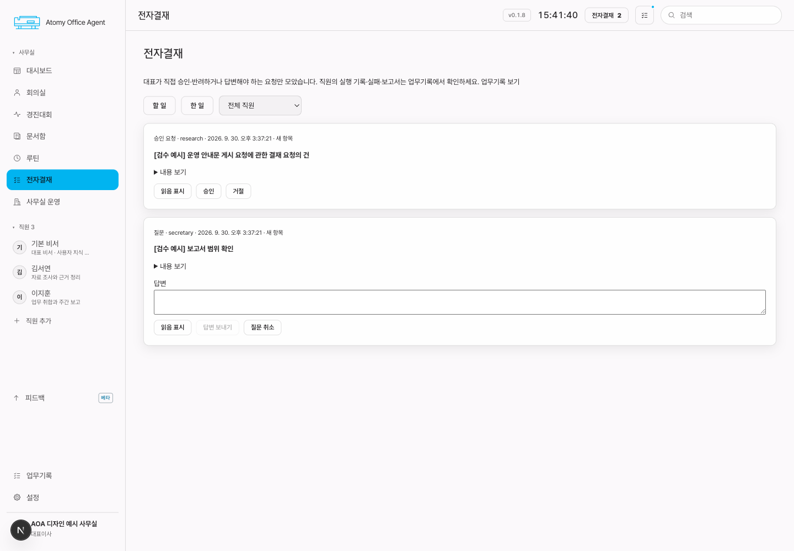
1 요청 열기
왼쪽 전자결재 또는 위쪽 전자결재 숫자를 누릅니다. 할 일에서 내용 보기를 열어 요청한 직원, 대상, 실행할 내용을 확인합니다.
2 승인 또는 거절
승인은 제안된 행동을 허용하는 결정입니다. 범위와 대상이 맞을 때 승인하고, 맞지 않으면 거절합니다. 불명확한 내용은 원래 직원 대화에서 수정 요청을 먼저 하세요.
3 질문에 답변
질문에는 필요한 정보를 입력하고 답변 보내기를 누릅니다. 읽음 표시만 누르면 질문에 답한 것이 아닙니다. 질문을 끝낼 때는 질문 취소 등 화면의 처리 동작을 사용합니다.
4 처리 이후 확인
한 일에서 처리 내역을 확인하고, 실제 후속 업무는 업무기록에서 봅니다. 직원의 실행 실패·완료 보고가 모두 전자결재에 들어오는 것은 아닙니다.
목차로3. 업무를 맡기고 결과 확인하기 / 18
업무기록에서 진행과 결과 확인하기
대화창을 떠나도 지시한 업무를 다시 찾을 수 있도록 실행과 전달 기록을 모아 보여줍니다.
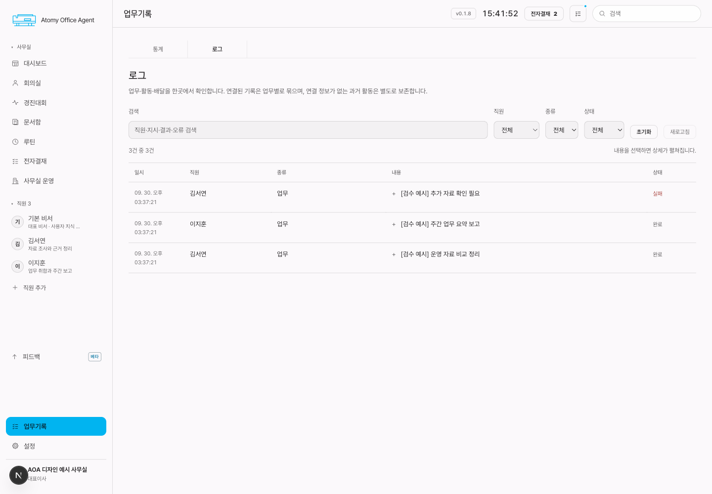
로그 찾기
업무기록 → 로그에서 검색어를 넣거나 직원, 종류, 상태를 선택합니다. 초기화는 검색 조건을 풀며 업무 기록을 삭제하는 버튼이 아닙니다.
상세 읽기
제목을 눌러 원래 지시와 담당자, 실행 상태, 결과 및 연결된 기록을 확인합니다. 실패했다면 실패한 단계와 남아 있는 결과가 있는지 먼저 살펴보세요.
완료와 전달 구분
직원이 결과를 만드는 것과 다른 직원에게 전달되는 것은 서로 다른 단계입니다. 전달만 실패했다면 이미 만들어진 결과를 확인하고, 전체 작업을 처음부터 중복 지시하지 않도록 합니다.
통계 살펴보기
통계에서는 기간과 시간대에 따른 업무량, 현재 부하, 위임 관계 등을 봅니다. 수치가 낮다고 직원의 능력이 낮다는 뜻은 아닙니다. 어떤 업무가 오래 기다리는지 찾는 자료로 사용하세요.
목차로3. 업무를 맡기고 결과 확인하기 / 19
문서함에서 지식과 결과물 찾기
답변 중 다시 쓸 내용, 업무 결과 파일과 참고 지식을 찾는 공간입니다.
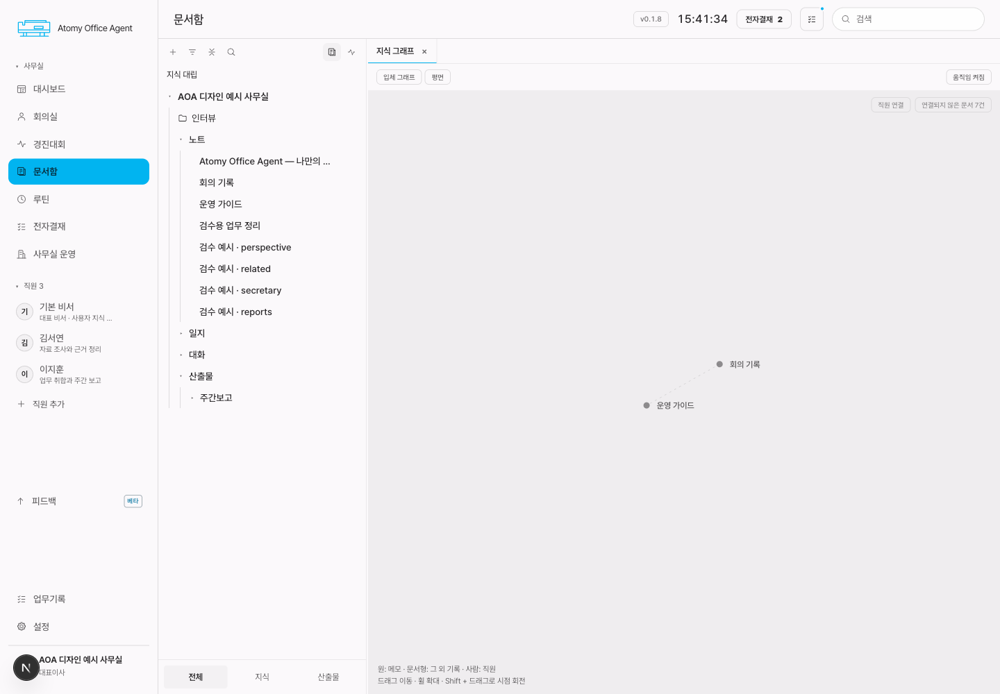
문서 찾고 읽기
문서함에서 전체·지식·산출물을 선택하고 검색하거나 목록에서 문서를 엽니다. 관련 문서 링크와 이 문서를 참조하는 다른 문서를 따라가며 맥락을 확인합니다.
결과 저장하기
문서를 열어 다운로드 또는 파일로 저장 기능을 사용합니다. 지원하는 문서는 PDF 파일로 저장할 수 있습니다. 저장창에서 위치를 정한 뒤 실제 파일을 열어 글자와 내용을 확인하세요.
기억을 바로잡기
오래된 정보나 틀린 내용이 있으면 문서와 날짜를 지정해 직원에게 정정을 요청합니다. 실제 문서에 반영됐는지 다시 확인하세요. 새 대화를 열었다고 모든 문서가 잊히는 것은 아닙니다.
지식 충돌 안내
같은 주제의 정보가 충돌한다고 표시되면 원문과 시점을 비교합니다. 최신 날짜만으로 무조건 옳다고 판단하지 말고 어떤 자료를 기준으로 삼을지 확인하세요.
목차로3. 업무를 맡기고 결과 확인하기 / 20
주간 보고 업무를 끝까지 따라 하기
앞에서 배운 화면을 하나의 업무로 연결해 봅니다. 모든 단계에서 실제 결과를 확인하고 다음 단계로 넘어갑니다.
- 자료 전달
- 초안과 검토
- 결과 저장
- 절차와 루틴
1 준비와 역할
자료 정리 직원에게 이번 주 사실 목록을 전달합니다. ‘완료·진행 중·확인 필요’를 구분하고 출처가 없는 주장은 만들지 말라고 지시합니다.
2 초안과 검토
보고서 초안을 받고 사실과 날짜를 확인합니다. 필요하면 회의실에서 다른 직원에게 누락과 불명확한 표현을 검토해 달라고 요청합니다. 보고서 채택은 내가 결정합니다.
3 요청 처리와 결과 확인
직원의 질문은 전자결재에서 답하고, 진행은 업무기록에서 확인합니다. 문서함에서 최종 보고서 파일을 열어 내용과 저장 위치를 확인합니다.
4 반복 가능한 절차로 정리
업무가 잘 맞았다면 입력 자료, 검토 기준, 결과 형식과 저장 위치를 절차로 남깁니다. 매주 반복할 때의 날짜 표현도 정리합니다.
5 루틴과 주간 리뷰
정해진 보고 작업은 루틴으로 예약합니다. 업무 방식 자체를 되돌아보고 싶다면 주간 리뷰를 설정합니다. 일반 보고 루틴과 주간 리뷰는 목적이 다릅니다.
목차로4. 동료를 구성하고 함께 결정하기 / 21
업무 현황을 보고 필요한 직원 추가하기
대시보드는 사무실의 시작 화면입니다. 새 직원 구성과 오늘 확인할 항목을 빠르게 찾습니다.
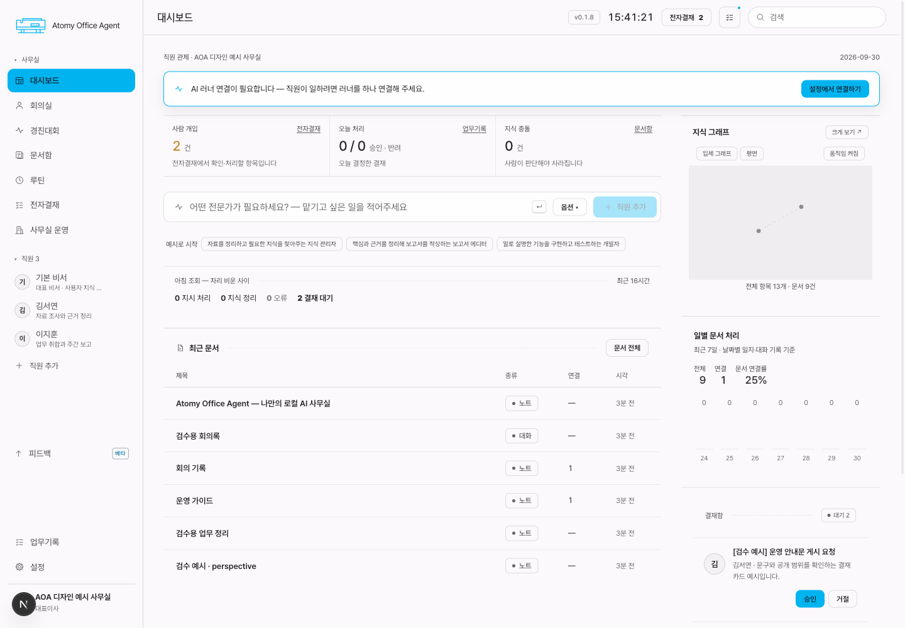
직원 추가
맡기고 싶은 일을 한 문장으로 적고 직원 추가를 누릅니다. 예: ‘여러 자료의 핵심과 출처를 비교해 보고서 초안을 만드는 직원’. 생성 후 역할을 확인하고 첫 지시를 보내세요.
사람 개입과 오늘 처리
전자결재가 몇 건 남았는지, 오늘 어떤 결재가 처리됐는지 살펴봅니다. 숫자를 업무 전체의 성공률로 해석하지 말고 해당 화면을 열어 내용을 확인하세요.
최근 문서와 지식 그래프
최근 저장한 문서를 열거나 문서 전체로 이동합니다. 지식 그래프는 자료 사이의 연결을 살펴보는 데 씁니다. 연결이 많다고 내용이 정확하다는 뜻은 아닙니다.
러너 연결 안내가 보일 때
직원이 일하려면 AI 연결이 필요하다는 안내입니다. 설정에서 연결하기를 눌러 상태를 확인합니다. 연결되지 않은 상태에서는 직원 추가나 실행이 제한될 수 있습니다.
목차로4. 동료를 구성하고 함께 결정하기 / 22
직원의 역할과 일하는 방식 조정하기
인사카드는 직원에게 맡긴 역할과 일하는 기준을 확인하고 수정하는 곳입니다.
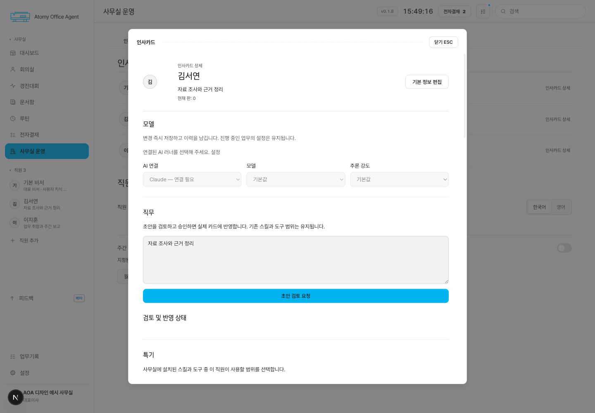
열고 확인하기
사무실 운영 → 인사카드에서 직원을 선택하거나 직원 대화 위쪽의 인사카드를 누릅니다. 역할, 전문성, 업무 지침과 사용할 AI·도구를 확인합니다.
수정할 때의 기준
지속적으로 적용할 역할과 원칙을 적고 저장합니다. ‘이번 보고서만 짧게’ 같은 일회성 요청은 대화에서 지시하세요. 기본 모델 변경과 현재 대화의 임시 모델 변경을 구분합니다.
가져온 프로젝트의 직원
이어받은 프로젝트의 목적·판단 기준·담당 업무·원본 자료 참조가 포함될 수 있습니다. 설정의 외부 작업 폴더가 현재 컴퓨터의 올바른 위치에 연결돼 있는지 확인하세요.
휴직과 복직
일시적으로 업무에서 제외할 때는 휴직 상태를 사용합니다. 복직 시 휴직 때문에 정지한 설정이 복원되는 것과 중단 업무의 재실행은 다릅니다. 해고·보관은 화면의 영향 설명과 이름 확인 절차를 읽고 결정하세요.
목차로4. 동료를 구성하고 함께 결정하기 / 23
스킬과 도구로 할 수 있는 일 늘리기
스킬은 일하는 방법을 알려주는 지침이고, 도구는 외부 자료나 기능을 사용할 수 있게 하는 연결입니다.
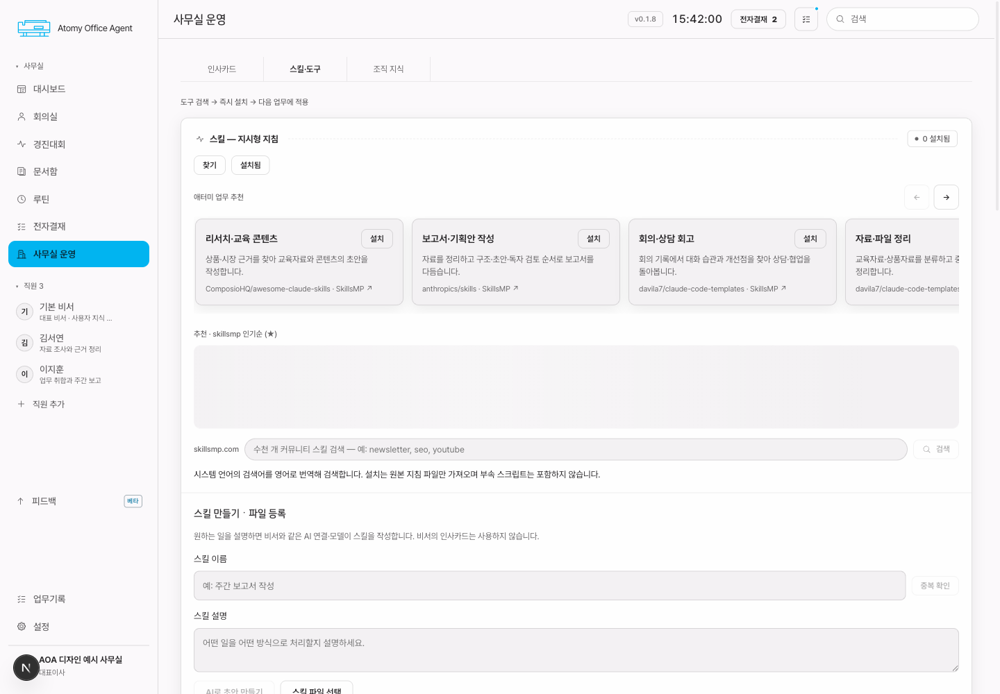
스킬 찾기와 등록
추천이나 검색으로 필요한 스킬을 찾고 설치합니다. 직접 스킬을 만들거나 마크다운 지침 파일을 등록할 수도 있습니다. 설치된 지침이 실제 업무에 맞는지 먼저 읽어 보세요.
MCP 도구 연결
MCP는 AI가 외부 기능을 호출할 때 쓰는 연결 방식입니다. 필요한 도구를 설치하고 로그인·서버 주소 등 해당 도구가 요구하는 설정을 마칩니다. 설치 버튼을 눌렀다고 계정 연결까지 끝나는 것은 아닙니다.
직원에게 사용 범위 지정
인사카드에서 해당 직원이 사용할 스킬·도구를 확인합니다. 러너마다 지원 방식이 다르므로 화면 안내를 따르세요. 어떤 도구가 필요한지 모르겠다면 맡길 업무부터 비서와 정리합니다.
연결 후 작은 작업으로 확인
읽기 작업 하나를 요청하고 실제 자료를 불러왔는지 확인합니다. 쓰기 작업은 대상과 변경 내용을 확인하세요. 공개 도구 목록에 있다는 사실만으로 개별 도구의 품질이 보장되지는 않습니다.
목차로4. 동료를 구성하고 함께 결정하기 / 24
회의실에서 여러 직원과 논의하기
서로 다른 역할의 의견을 함께 받고 싶을 때 회의실을 사용합니다.
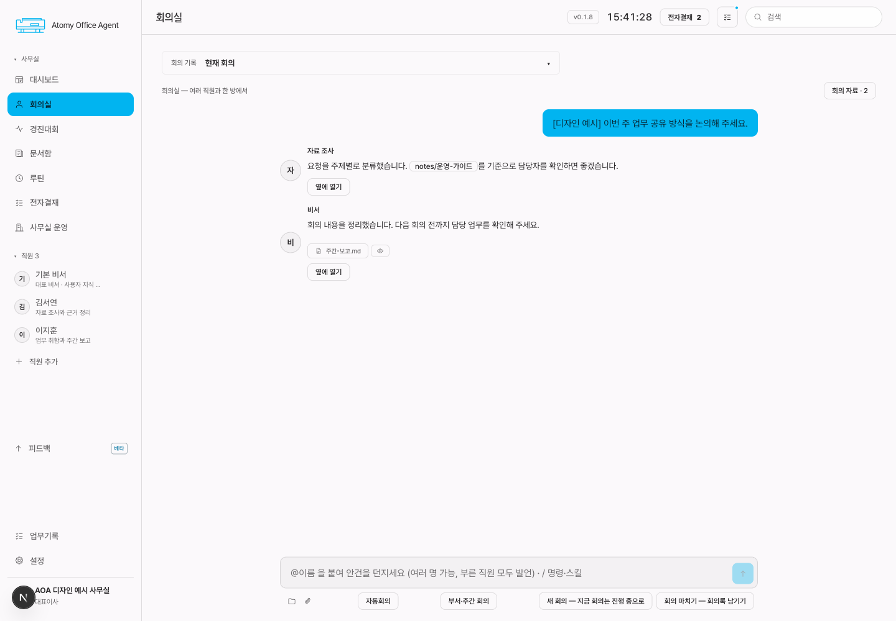
1 참여 직원 지정
입력란에서 @이름으로 직원을 불러 안건을 적습니다. 여러 직원을 부를 수 있습니다. 예: ‘@김서연 @이지훈 이번 주 보고서에 빠진 내용과 다음 할 일을 검토해 줘.’
2 발언과 근거 읽기
발언을 읽고, 근거와 상세 보기가 있는 발언은 펼쳐 확인합니다. 옆에 열기로 발언자의 대화를 나란히 볼 수 있습니다. 논의 중 제안은 실행 승인이나 전원 합의와 다릅니다.
3 회의 자료 확인
회의 자료에서 조사 결과와 산출물을 확인합니다. ‘조사하겠다’는 발언과 실제 저장된 조사 결과를 구분하세요. 후속 업무의 담당자와 결과 형식을 명확히 정합니다.
4 회의 마치기
회의 마치기 — 회의록 남기기로 정리합니다. 회의 기록에서 이전 회의를 찾고 이어갈 수 있습니다. 새 회의 버튼의 안내를 읽어 현재 회의가 어떻게 보관되는지 확인하세요.
목차로4. 동료를 구성하고 함께 결정하기 / 25
자동회의 전에 직원과 자료 준비하기
결정할 안건과 필요한 관점을 정하고, 각 직원이 필요한 자료를 읽을 수 있는지 먼저 확인합니다.
- 결정할 안건
- 참석 직원 준비
- 자료 접근 시험
- 진행자와 시간
1. 회의로 결정할 것 하나 정하기
예: “다음 주 보고서 작성 절차를 줄일 방법을 비교하고, 내가 선택할 대안 두 개를 제시해 줘.” 회의가 끝났을 때 받을 결과를 적습니다.
2. 참석 직원 준비
자료 정리 담당과 검토 담당처럼 다른 관점의 직원을 고릅니다. 회의실 → 자동회의의 참석자 목록에 선택 가능한 직원이 있는지 확인합니다. 직원 관리 활성화 안내가 나오면 사무실 운영의 안내를 먼저 따릅니다.
3. 연결과 자료 접근 시험
참석 직원에게 “이 자료의 제목과 핵심 한 줄을 알려 줘”라고 직접 요청합니다. AI 연결, 자료 위치, 해당 직원의 도구 사용 설정을 확인합니다. 조직 지식이 필요하면 앞의 연결 절차를 먼저 마칩니다.
4. 보고할 사람과 시간 정하기
선택한 참석자 중 최종보고 진행자를 정합니다. 처음에는 참석자 2명·토론 1회처럼 작은 규모로 시험하세요. 컴퓨터와 앱을 켜 두고 진행을 확인합니다.
목차로4. 동료를 구성하고 함께 결정하기 / 26
안건을 넣고 자동회의 시작하기
자동회의는 정한 안건에 따라 여러 직원의 발언을 이어가는 기능입니다. 처음에는 참여자와 시간을 작게 잡으세요.
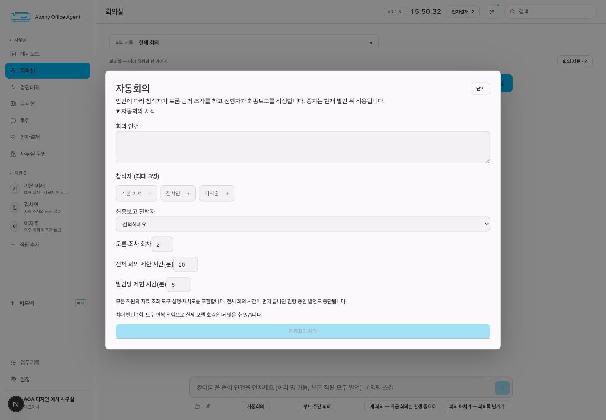
1. 회의실 → 자동회의 열기
자동회의 시작 영역을 펼치고 회의 안건에 배경·참조 자료·결정할 질문·원하는 보고 형식을 적습니다.
2. 참석자와 진행자 선택
참석자는 1~8명, 최종보고 진행자는 선택한 참석자 중 1명입니다. 토론·조사 회차는 1~4회입니다. 2명·1회라면 최종보고를 포함해 최대 발언 3회로 표시됩니다.
3. 시간 설정 후 시작
전체 회의 제한 시간은 1~60분(기본 20분), 발언당 제한 시간은 1~60분(기본 5분)입니다. 자료 조회·도구 실행·재시도도 발언 시간에 포함됩니다. 설정을 확인하고 자동회의 시작을 누릅니다.
4. 보고와 근거 확인
현재 발언자와 진행 상태를 살펴봅니다. 최종보고 기록됨 이후 회의 기록과 보고 보기에서 요약·논의 경과·원문과 자료를 확인하고, 실행 기록에서 실제 수행 상태를 확인합니다.
목차로4. 동료를 구성하고 함께 결정하기 / 27
회의를 멈추고 보완한 뒤 이어가기
회의 중에도 조건을 추가하고 기록에서 이어갈 수 있습니다. 먼저 현재 상태와 마지막 발언을 확인하세요.
| 내가 하려는 일 | 화면에서 하는 행동 |
|---|---|
| 잠시 멈추기 | 중지 요청을 누릅니다. 현재 발언이 끝나면 중지되므로 상태가 바뀔 때까지 기다립니다. |
| 조건이나 질문 추가 | 회의 기록과 보고 보기에서 추가 안건·질문을 입력하고 회의에 추가를 누릅니다. 발언 중에는 먼저 중지하고 기다립니다. |
| 중지한 회의 이어가기 | 기록과 직원 상태를 확인하고 기록에서 재개를 누릅니다. |
| 시간이 부족함 | 시간 한도 도달이면 시간 한도 추가 후 재개를 사용합니다. 전체 시간과 발언당 시간을 각각 확인합니다. |
| 실패 또는 앱 재시작 | 실행 기록에서 마지막 상태를 확인합니다. AI 연결·직원 상태·자료 접근 문제를 해결한 뒤 재개합니다. |
| 현재 기록까지만 남기기 | 발언이 끝난 상태에서 여기까지 보관하고 종료를 누릅니다. 기록은 중도 종료 상태로 남습니다. |
| 끝난 회의에서 추가 논의 | 이 기록으로 후속 회의 준비로 새 회의를 준비합니다. 안건·참석자·진행자를 확인한 뒤 시작합니다. |
4. 동료를 구성하고 함께 결정하기 / 28
경진대회에서 여러 시안 비교하기
같은 과제에 여러 직원이나 모델이 답하도록 하고, 내가 목적에 맞는 결과를 선택합니다.
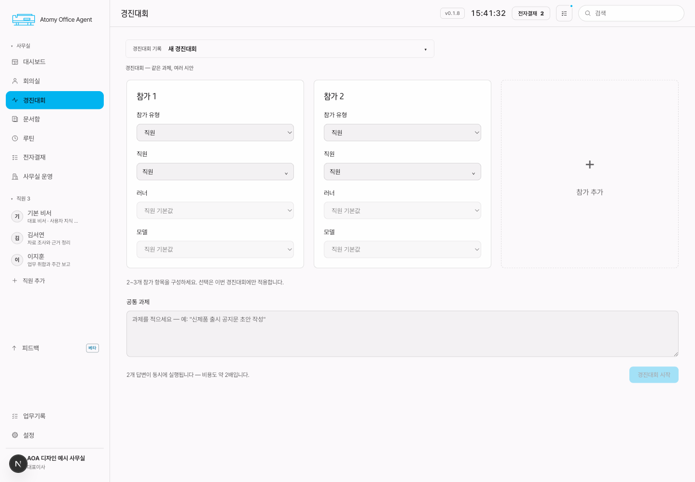
1 참가 항목 설정
경진대회 → 새 경진대회에서 참가 유형을 정합니다. 직원 또는 외주직원(LM)을 고르고, 필요한 러너·모델을 선택합니다. 참가 추가로 최대 3개까지 비교할 수 있습니다. 직원 참가 목록에서는 기본 비서가 제외됩니다.
2 공통 과제 입력
모두에게 같은 자료와 평가 기준을 줍니다. 예: ‘신입 대상 안내문을 300자 이내로 작성해 줘. 전문용어를 풀어 쓰고 마지막에 다음 행동 한 가지를 넣어 줘.’
3 시안 읽고 채택
경진대회 시작 후 결과를 나란히 읽습니다. 사실의 정확성, 독자 적합성, 요청한 형식을 비교하고 이 시안 채택을 누릅니다. 직원 참가의 채택본은 해당 직원 대화로 이어집니다. 외주직원(LM) 채택본은 경진대회 기록에 보관됩니다.
비교 선택의 범위
경진대회의 모델 선택은 그 비교 실행에 적용됩니다. 직원 기본 모델이나 기존 대화 설정을 바꾸는 동작은 아닙니다. 여러 답변을 실행하므로 비용과 이용량도 함께 고려하세요.
목차로5. 잘 된 일을 반복하고 보고받기 / 29
잘 된 업무를 저장 절차로 남기기
같은 방식으로 다시 할 일이라면 결과뿐 아니라 입력, 수행 순서와 저장 기준을 남겨 두세요.
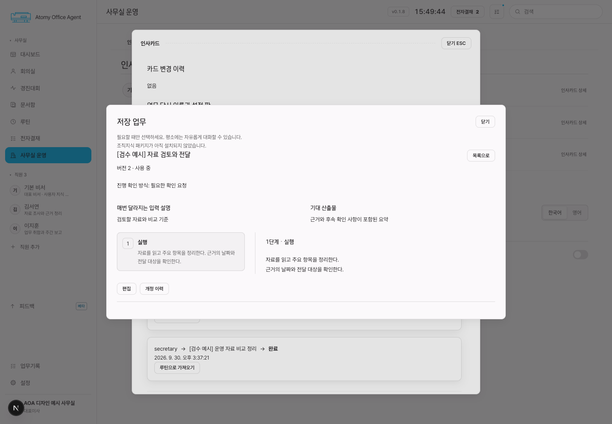
한 번의 지시와 저장 절차
‘오늘 자료를 정리해 줘’는 일회성 지시입니다. ‘이 순서를 매주 재사용할 절차로 저장해 줘’는 업무 방식을 남기는 요청입니다. 절차 저장과 일정 예약은 별도입니다.
절차에 넣을 내용
필요한 자료, 담당 직원, 작업 순서, 결과 파일 위치, 다음 직원에게 넘길 조건을 적습니다. 예: ‘자료 확인 → 핵심 정리 → 출처 검토 → 보고서 저장 → 비서에게 전달’.
제안 검토와 저장 확인
직원이 재사용할 절차를 제안하면 목적과 단계를 확인합니다. 승인 후 저장 업무 또는 인사카드에 연결된 절차에서 실제 반영을 확인하세요. 직원이 제안했다고 곧바로 저장된 것은 아닙니다.
개선과 재사용
절차를 수정하면 다음 실행에 쓸 기준을 바꾸는 것입니다. 과거 결과가 자동으로 다시 작성되지는 않습니다. 반복 실행은 루틴에 연결하고, 새 절차가 나아졌는지는 다음 결과로 판단하세요.
목차로5. 잘 된 일을 반복하고 보고받기 / 30
루틴으로 반복 업무 예약하기
한 번 해 보고 쓸 만했던 업무를 정기적으로 수행하게 할 때 루틴을 사용합니다.
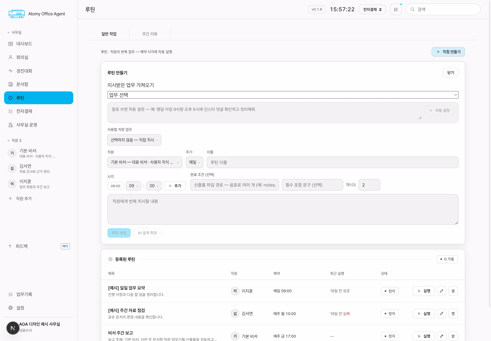
1 반복할 업무 준비
루틴 → 일반 작업에서 직접 만들기를 선택합니다. 지시받은 업무 가져오기로 기존 업무를 재사용하거나 지시를 직접 작성합니다. 연결할 저장 절차가 있다면 목적과 버전을 확인하세요.
2 직원과 일정 설정
담당 직원, 반복 일정과 시간을 정합니다. ‘이번 주’처럼 기준이 달라지는 표현은 ‘실행일이 속한 주’ 등으로 고쳐 매번 무엇을 처리할지 명확히 합니다. 담당 직원·지시·예약 조건을 확인한 뒤 루틴 생성을 누릅니다.
3 저장 후 실행 결과 확인
등록된 루틴의 가동·정지 상태와 최근 실행을 확인합니다. 실행 버튼으로 시험할 때도 실제 AI 작업이 수행될 수 있습니다. 업무기록과 저장된 결과를 함께 보세요.
4 필요 없으면 정지
일정이 바뀌거나 자료 공급이 끊겼다면 루틴을 정지하고 지시를 수정합니다. 앱과 컴퓨터가 꺼져 있을 때 예약이 실행된다고 기대하지 마세요. 로컬 실행 환경이 유지돼야 합니다.
목차로5. 잘 된 일을 반복하고 보고받기 / 31
주간 리뷰와 비서 보고 받기
주간 리뷰는 직원의 업무를 돌아보고 다음 주에 바꿀 점을 찾는 정기 검토입니다.
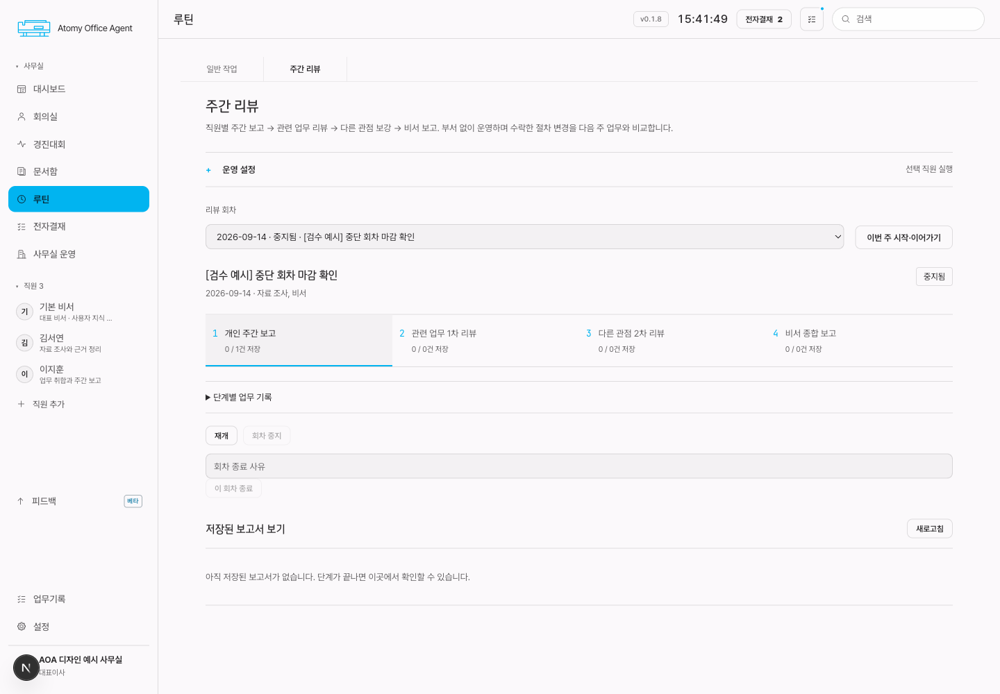
운영 설정
루틴 → 주간 리뷰 → 운영 설정에서 참여 범위, 요일, 시각, 시간대와 자동 시작 여부를 정합니다. 목표와 리뷰 기준을 쓰고 저장한 뒤 이번 주 시작·이어가기를 사용합니다.
진행 순서
개인 주간 보고 → 관련 업무 1차 리뷰 → 다른 관점 2차 리뷰 → 비서 종합 보고로 이어집니다. 고정 부서를 만들어야 하는 것은 아닙니다. 단계별 업무 기록에서 세부 진행을 확인합니다.
보고서와 개선 확인
저장된 보고서 보기 또는 문서함에서 결과와 근거를 읽습니다. 개선할 절차를 수락했다면 다음 실행에 반영됐는지 확인합니다. 새 절차의 실행 근거가 없으면 효과 판단을 미룹니다.
중단과 설정 변경
자동 시작을 꺼도 이미 진행 중인 회차가 멈추지는 않습니다. 필요하면 회차 중지를 사용하세요. 일정·참여자 변경은 다음 회차부터 적용됩니다. 중지 원인을 확인한 뒤 재개합니다.
목차로6. 필요한 화면과 도움 찾기 / 32
하고 싶은 일에 맞는 화면 찾기
직원에게 말할 때는 직원 이름을, 내가 처리할 요청을 볼 때는 전자결재를 선택하세요.
| 하고 싶은 일 | 이동할 곳 |
|---|---|
| 직원 만들기와 현황 확인 | 대시보드 |
| 직원에게 업무 지시하기 | 왼쪽 직원 이름 → 직원 대화 |
| 승인하거나 질문에 답하기 | 전자결재 |
| 진행 상태와 결과 확인 | 업무기록 → 로그 |
| 저장한 지식과 결과물 찾기 | 문서함 |
| 함께 논의하거나 결과 비교 | 회의실 / 경진대회 |
| 반복 업무와 정기 검토 | 루틴 → 일반 작업 / 주간 리뷰 |
| 직원과 도구 관리 | 사무실 운영 |
| AI 연결과 앱 환경 변경 | 설정 |
6. 필요한 화면과 도움 찾기 / 33
내 사용 환경과 연결 상태 확인하기
설정에서는 화면 모양뿐 아니라 AI 연결, 파일 접근, 외부 계정과 앱 업데이트를 관리합니다.
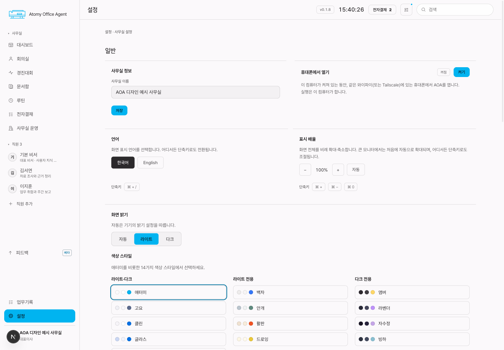
| 구역 | 확인할 내용 |
|---|---|
| 일반 | 사무실 이름, 화면 언어, 표시 배율, 밝기와 색상 스타일 |
| AI 연결 | 직원이 실행할 AI 서비스와 인증 상태 |
| 기기 | 데이터 내보내기, 옵시디언 가져오기, 앱 업데이트 |
| 이 PC파일 접근 | 외부 작업 폴더와 시스템 권한 |
| 연결 | 사용자 계정, 기록 정리, 텔레그램·슬랙 봇 |
| 위험 구역 | 사무실 보관 |
화면 언어와 직원 응답 언어
화면 표시 언어는 설정에서 바꾸고, 직원 응답 언어는 사무실 운영의 직원 기본 설정에서 확인합니다. 화면을 영어로 바꾸는 것과 직원에게 영어 응답을 맡기는 것은 구분됩니다.
목차로6. 필요한 화면과 도움 찾기 / 34
막혔을 때 확인할 순서
같은 지시를 여러 번 보내기 전에 연결, 결재, 기록을 확인하면 중복 실행을 줄일 수 있습니다.
- 연결 확인
- 결재 확인
- 업무기록 확인
- 원인에 맞게 조치
| 증상 | 먼저 확인할 곳 |
|---|---|
| 직원이 답하지 않아요 | 설정의 AI 연결·인증·이용 한도, 업무기록의 진행·실패 상태 |
| 업무가 기다리는 것 같아요 | 전자결재의 질문·승인 대기와 원래 직원 대화 |
| 답변은 있는데 파일이 없어요 | 문서 저장을 요청했는지, 파일 링크와 문서함에 실제 저장됐는지 |
| 루틴이 실행되지 않아요 | 가동 상태, 직원 휴직, 예약 시간·시간대, 앱과 컴퓨터 실행 상태 |
| 가져오기가 일부만 읽었어요 | 읽은 자료와 제외 목록, 파일 형식·크기·분석 한도 |
| 가져오기 반영이 중단됐어요 | 같은 가져오기 기록의 반영 다시 시도와 오류 안내 |
| 예전 내용으로 답해요 | 참조 문서의 판본과 날짜를 지정하고 정정 후 저장본 확인 |
| 앱 연결 끊김이 떠요 | 안내의 재확인부터 실행하고, 재시작이 필요하면 진행 업무 확인 |
피드백을 보낼 때
사용 OS, 앱 버전, 어떤 화면에서 무엇을 눌렀는지, 기대 결과와 실제 결과를 적습니다. 오류 문구를 그대로 남기되 키·비밀번호·개인 업무 자료는 가립니다. 첨부와 전송 정보를 미리 확인하세요.
목차로6. 필요한 화면과 도움 찾기 / 35
처음 보는 말과 시작 전 확인표
용어를 모두 외울 필요는 없습니다. 화면에서 만났을 때 필요한 뜻만 찾아보세요.
| 용어 | 쉬운 설명 |
|---|---|
| 사무실·오피스 | 같이 일하는 직원과 문서를 모은 작업 공간 |
| 직원·에이전트 | 역할과 지침에 따라 AI로 업무를 수행하는 구성원 |
| 비서 | 필요한 업무와 직원 구성을 돕고 보고를 취합하는 직원 |
| 러너 / 모델 | AI를 실행하는 연결 방식 / 실제 응답을 만드는 AI 종류 |
| API 키 | 외부 AI나 서비스를 이용하도록 발급받는 비밀 연결 정보 |
| 세션 | 하나의 주제와 맥락으로 이어지는 대화 묶음 |
| 인사카드 | 직원의 역할·지침·기본 AI·도구 정보를 담은 카드 |
| 저장 업무·절차 | 다음에도 재사용할 업무 방식과 수행 단계 |
| 루틴 | 정해진 일정으로 반복하는 업무 |
| 스킬 / MCP 도구 | 일하는 방법을 알려주는 지침 / 외부 기능과 연결하는 도구 |
| 문서함·Vault | 참고 지식과 업무 결과 파일을 찾는 공간 |
| 산출물 | 보고서·문서·코드 등 업무로 만들어 낸 결과물 |
| 위임 | 다른 직원에게 업무를 맡기고 결과를 돌려받는 것 |
첫 업무 확인표
AI 연결 상태를 확인했나요? 맡길 일과 원하는 결과를 적었나요? 필요한 자료를 전달했나요? 전자결재에 질문이 남아 있지 않나요? 결과 파일을 실제로 열어 보았나요? 이 다섯 가지를 확인하면 다음 업무로 넘어갈 준비가 됩니다.
목차로